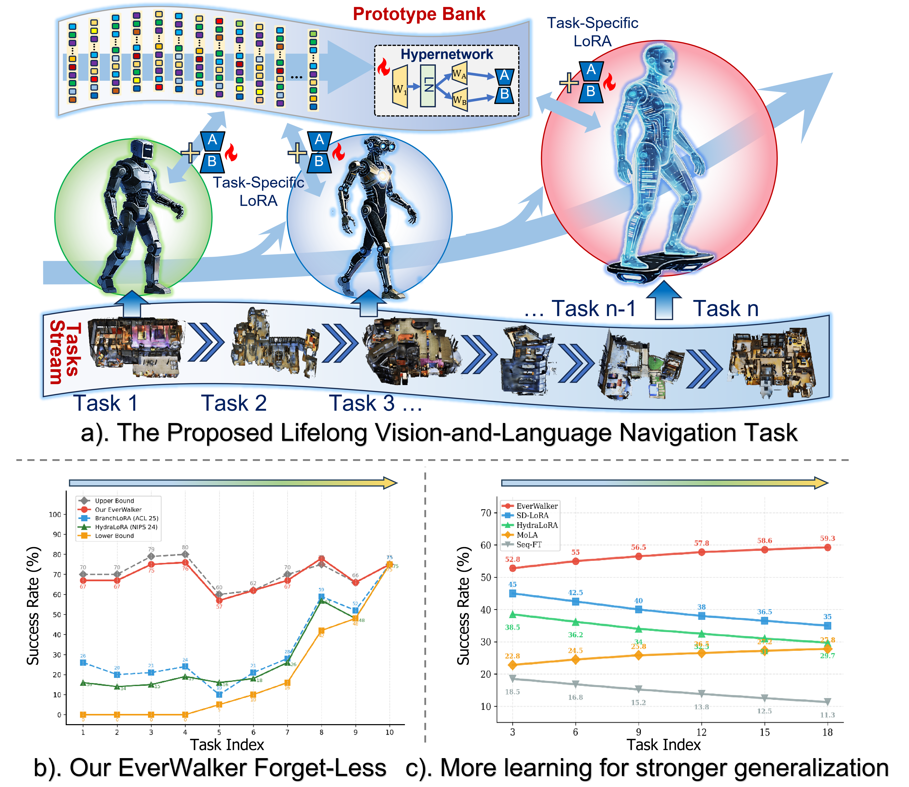
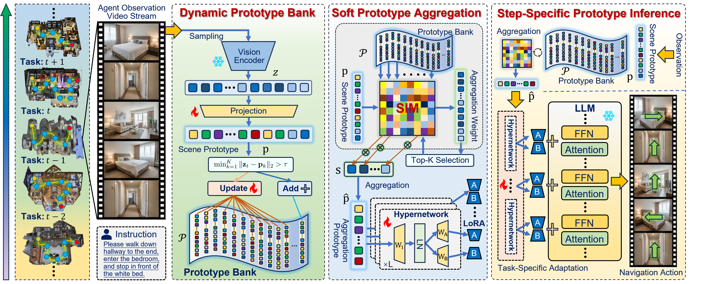
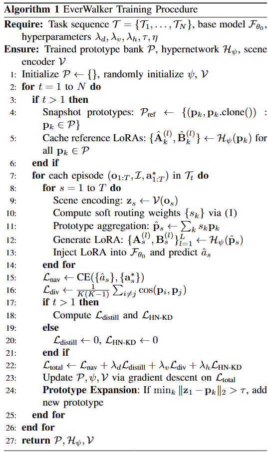
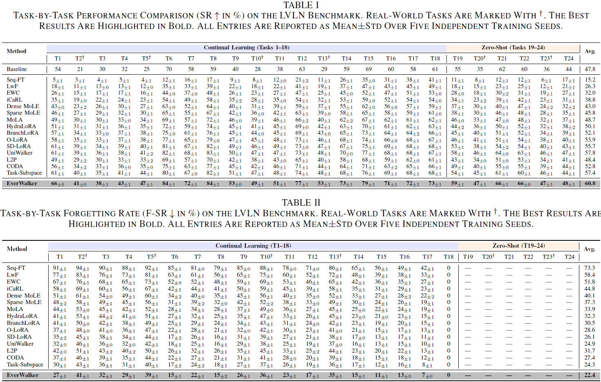
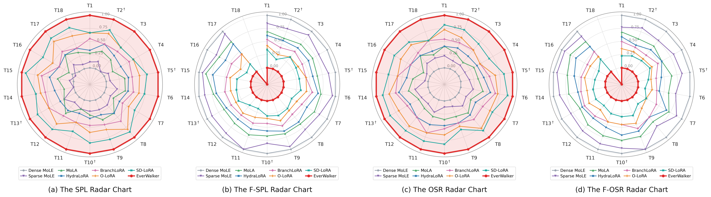
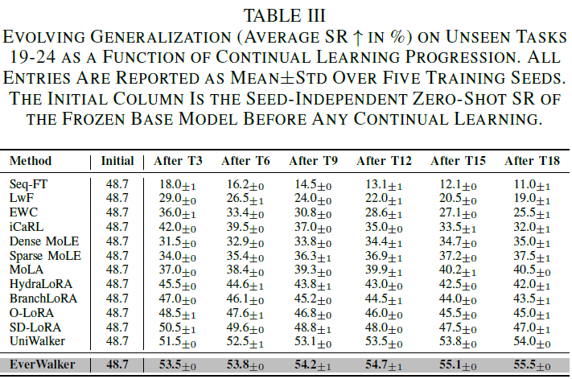
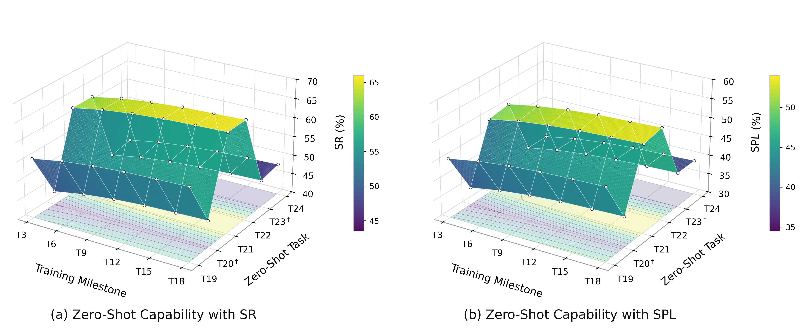

Evolving the Prototype Journey: Lifelong Vision-and-Language Navigation with Prototype Adaptation

Abstract
Method

Illustration for the proposed EverWalker. EverWalker consists of two core components: A Dynamic Prototype Bank maintains an evolving library of scene prototypes with soft routing for knowledge aggregation. A Prototype Hypernetwork dynamically generates task-specific LoRA conditioned on aggregated prototypes, enabling adaptive navigation while preserving shared knowledge.
EverWalker Algorithms

Task Setting

Illustration of the proposed robotic navigation system. The platform integrates a quadruped robot for mobility, a camera for visual perception, and a remote server for running the navigation robot to collect training data.
Real-World Experiments Setting

Continual Learning Phase Experiments
Task1
Please walk around the left side of the table and enter the living room on the left. From the living room, enter the room on the right and find the bathroom inside. Go into the bathroom.Task2
Go forward, go around the right side of the red ball, then go around the left side of the yellow railing, and continue forward until you find the red cylinder.Task3
Find the hallway, go through the hallway between the cabinet and the water dispenser, keep walking straight, go through the door at the end of the hallway, and stop at the entrance to the living room.Task4
Walk straight ahead from the bar on the right, go through the door in front, turn right and enter the rightmost room, stop in front of the wardrobe in the room.Task5
Walk forward, passing between the yellow cones and the blue cylinders, then continue forward, passing to the left of the white soccer ball, and stop in front of the red ball.Task6
Exit the room through the door, walk into the hallway on the left, walk forward and turn left into the living room on the left, then stop in front of the dining table on the right side of the living room.Task7
Enter the bedroom from your current location, exit through the other door, then walk into the hall and turn left to the entrance door of the hall.Task8
Find the exit from your current location, go through the door into the living room, turn right after exiting the door, and find the piano in the corner against the wall.Task9
After leaving the house, walk into the living room, then turn right and walk to the entrance of the room on the left side of the stairs, then stop.Task10
Walk forward, passing the two yellow traffic cones to the left. You'll then see a red traffic cone; pass it to the right. Continue walking forward until you stop in front of the yellow traffic cone near the window.Task11
Walk straight ahead along the corridor, looking at the wall, passing through these office areas, and finally stop next to the washbasin in front of the door.Task12
Enter the house from the balcony, walk straight ahead along the wall in the living room, then turn right, and continue walking forward until you reach the door to the two bedrooms.Task13
Walk forward, passing between the yellow and red cones, then continue forward, passing to the right of the red ball, until you reach the red soccer ball next to the cardboard box.Task14
Go out of the kitchen, walk to the dining room, turn left, and stop at the sofa in the living room.Task15
First, exit this room and enter another room to the left of the stairs, eventually stopping in front of the bed.Task16
Walk forward to the landing at the top of the stairs, enter the room on the right, then turn left and enter the bathroom. Stop inside.Task17
Turn right from your current position, walk straight ahead along the wall and cabinets, enter the kitchen through the door, then enter the dining room from the right, walk straight ahead along the left wall, and finally enter the wine storage room.Task18
First, find the exit of the current room, go out through the door, then continue forward until you reach the left side of the stairs. Stop at the entrance of the room on the left.Zero-Shot Generalization Phase Experiments
Task19
Leave the bathroom and go straight across through the pantry and kitchen Stop just past the counters in the kitchen.Task20
Walk forward along the ramp, around the obstacle, go around the yellow railing to the left, continue forward, turn left, and finally stop in front of the red traffic cones.Task21
Leave the room and make a left. Walk down the hallway and make a right when you get past the bannister of the staircase. Walk past the staircase, which will be on your right as you pass. Walk through the doorway and stop.Task22
Turn around and go to your right. Turn right and go passed the painting. Then go left to go into the bar area. Pass the bar and go towards the dining table. Stop in the dining room near the table.Task23
Walk straight along the tactile paving, go around the orange traffic cones to the right to avoid bumping into the red pillar, cross the yellow railing to the right, walk forward a bit, and finally stop in front of the pillar.Task24
Turn right on the second arch. Turn left. Pass the kitchen. Wait near the fireplace.Comparison Experiment Results
Continual Learning Phase (Seen Scenes)


Comparison across the 18 continual learning tasks, including EverWalker's radar chart: (a) SPL, (b) F-SPL, (c) OSR, (d) F-OSR.
Zero-Shot Generalization Phase (Unseen Scenes)


Evolving generalization. The proposed EverWalker's SR and SPL on unseen Tasks 19--24 evaluated after training milestones (T3, T6, T9, T12, T15, T18). Its five-seed mean SR improves from 53.5% to 55.5%.
For more ablation experimental analysis, please refer to the main text and Appendix of our paper.
BibTeX
@ARTICLE{11667662, author={Li, Gan and Wang, Xudong and Liao, Yue and Lv, Xuewei and Dong, Jiahua and Liu, Xiyao and Wang, Yanbo and Qin, Pinle and Liu, Lianqing and Han, Zhi}, journal={IEEE Transactions on Circuits and Systems for Video Technology}, title={Evolving the Prototype Journey: Lifelong Vision-and-Language Navigation with Prototype Adaptation}, year={2026}, volume={}, number={}, pages={1-1}, keywords={Vision-and-language navigation;continual learning;robotic learning;embodied AI}, doi={10.1109/TCSVT.2026.3727681}}}